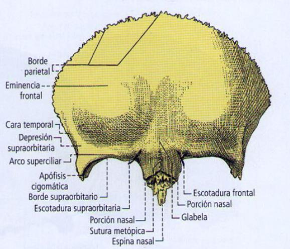
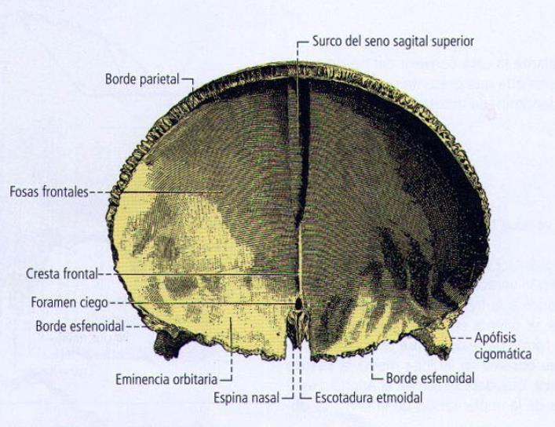
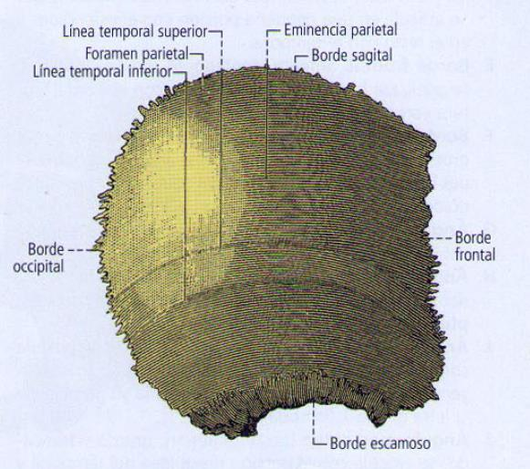
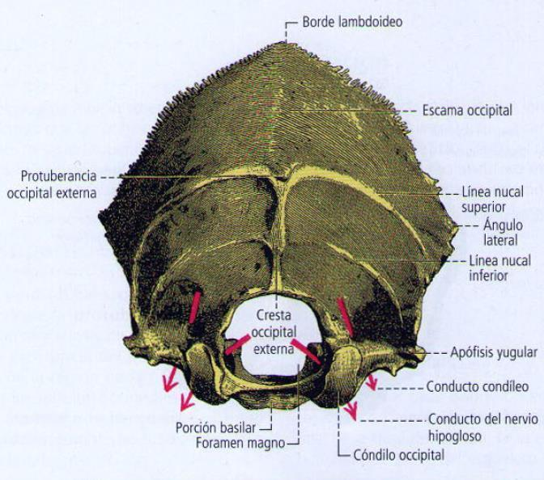
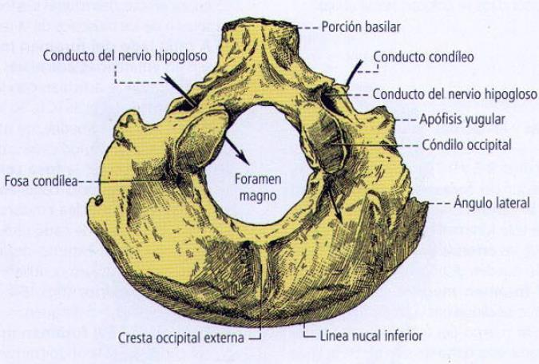
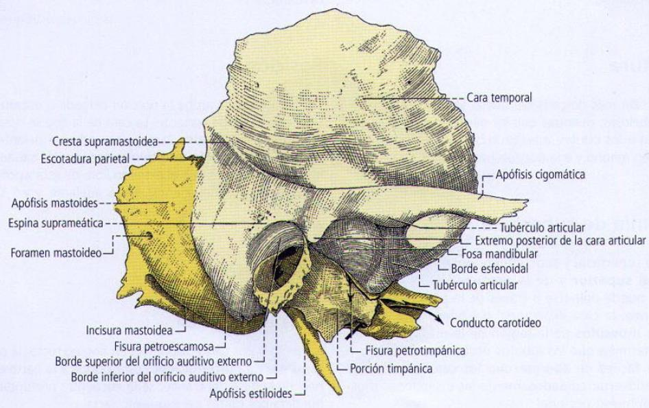
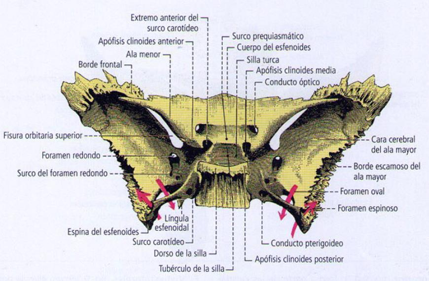
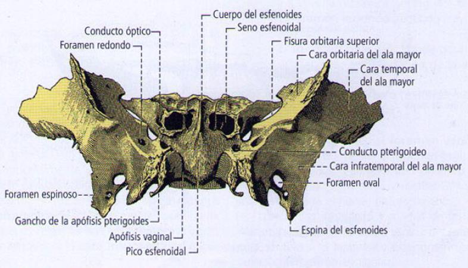
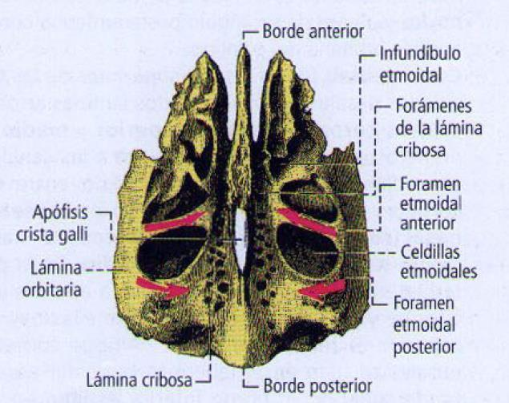

ClinicusMed · Dossiê Clinicus — Padrão de Excelência
| Porção | Função |
|---|---|
| Crânio | Forma de caixa óssea, contém o encéfalo |
| Face | Aloja a maior parte dos órgãos dos sentidos e sustenta os órgãos da mastigação |
| Mandíbula | Ossos |
|---|---|
| Inferior | Osso Maxilar Inferior (ÍMPAR) |
| Superior | Maxilar Superior, Malar (Zigomático), Osso Próprio do Nariz, Unguis (Lacrimal), Cornetos Inferiores, Palatino, Vômer (ÍMPAR) — todos PARES exceto o Vômer |
| Tipo | Ossos |
|---|---|
| Pares | Parietais, Temporais |
| Ímpares | Frontal, Occipital, Esfenoide, Etmoide |
| Divisão | Limites |
|---|---|
| Calvária (Calota) | Limitada abaixo por um plano que passa à frente e um pouco acima dos arcos superciliares; lateralmente pelo arco zigomático; termina atrás na protuberância occipital externa |
| Base do Crânio | Ver detalhamento abaixo |
| Esqueleto Facial | Ossos da face |
Delimitada por 2 linhas transversais: linha bizigomática (entre os tubérculos articulares) e linha bimastóidea (entre as apófises mastoides).
| Zona | Estruturas |
|---|---|
| Anterior | Frontal, Etmoide, Esfenoide |
| Média | Porção basilar do occipital (tubérculo faríngeo), meato acústico externo, forames espinoso e oval, forame estilomastóideo, forame jugular, fossa jugular, orifício externo do canal carotídeo, canal do nervo hipoglosso |
| Posterior | Centrada no forame magno |
| Fossa | Estruturas |
|---|---|
| Anterior | Forame cego, crista galli, lâmina cribosa do etmoide, jugo esfenoidal |
| Média | Sela túrcica, forame espinoso, forame oval, forame redondo, fissura orbitária superior |
| Posterior | Clivus, crista occipital interna, fossas cerebelosas, seio petroso superior/inferior, seio transverso e sigmoide, forame jugular (nervos vago, glossofaríngeo, acessório) |
| Forame | O que passa |
|---|---|
| Forame Cego | Entre o Frontal e o Etmoide |
| Canal Óptico | Artéria oftálmica + Nervo Óptico |
| Fissura Orbitária Superior | Veia oftálmica + Nervos Oculomotor(III), Troclear(IV), Abducente(VI) e 1ª ramo do Trigêmeo(V1) |
| Forame Redondo | Nervo Maxilar (V2) |
| Forame Oval | Nervo Mandibular (V3) |
| Forame Espinoso | Artéria meníngea média (ramo da artéria maxilar interna) |
| Forame Rasgado Posterior (Jugular) | Nervos Glossofaríngeo(IX), Vago(X), Acessório Espinal(XI) |
| Conduto Auditivo Interno | Nervos Facial(VII) e Vestibulococlear(VIII) |
| Foramen Magno | Bulbo raquídeo, artérias vertebrais, nervo acessório (raiz espinal) |






| Porção | Característica |
|---|---|
| Porção Petrosa | Contém o ouvido interno; contém o meato acústico interno |
| Apófise Estilomastóidea | É um seio, mas se comporta como células até os 6 anos de idade |



| Componente | Detalhe |
|---|---|
| 2 Massas Laterais | — |
| Lâmina Cribosa | Onde repousa o bulbo olfatório |
| Apófise Crista Galli | Inserção da Foice do Cérebro |
As peças ósseas do crânio e da face estão unidas por articulações imóveis (fibrosas), representadas por suturas, agrupadas em 4 tipos:
| Tipo de Sutura |
|---|
| Dentada |
| Escamosa |
| Plana ou Harmônica |
| Esquindilese |
| Estrutura | Detalhe |
|---|---|
| Bulbo Olfatório | Repousa na lâmina cribosa, nasce do cérebro; dele nasce o nervo olfatório |
| Lesão do Nervo Olfatório | Chama-se ANOSMIA |
| Lesão de Base de Crânio | NÃO se pode sondar pelo nariz (risco de lesar o bulbo olfatório) — sondar pela boca |
| Fratura de Base de Crânio | Sinal de Battle (equimose retroauricular) ou "olhos de guaxinim" (equimose periorbitária) |
| Camada | Detalhe |
|---|---|
| Duramáter | Camada MAIS EXTERNA das meninges, insere-se no osso |
Vamos acompanhar um motociclista de 28 anos com trauma facial após acidente, relacionando o caso à anatomia da base do crânio. O caso evolui em 3 níveis — clica em cada um pra ver como as coisas vão se desenrolando.
O sistema guarda, no seu navegador, quais cards você já sabe bem e quais precisam voltar mais cedo — cada vez que você avalia um card, ele recalcula quando ele deve voltar.
10 questões, do mais básico ao mais puxado. Escolhe uma alternativa, depois clica em "Ver comentário completo" — vale a pena ler até quando você acerta, porque o comentário explica cada alternativa, não só a certa.
Todas as imagens desse capítulo, reunidas num só lugar pra revisão rápida.